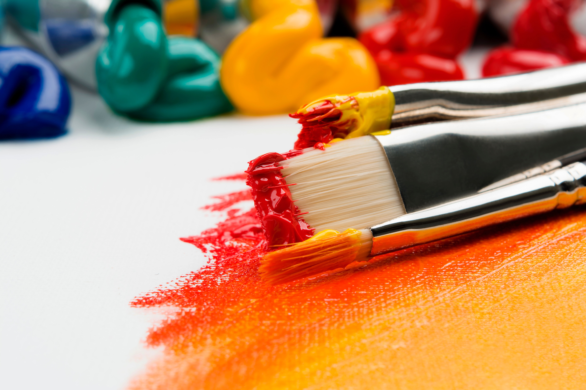

Mediums

Traditional Art
Digital Art
Digital art is an artistic work or practice that uses digital technology as part of the creative or presentation process. Since the 1970s, various names have been used to describe the process, including computer art and multimedia art. Digital art is itself placed under the larger umbrella term new media art.
Photography